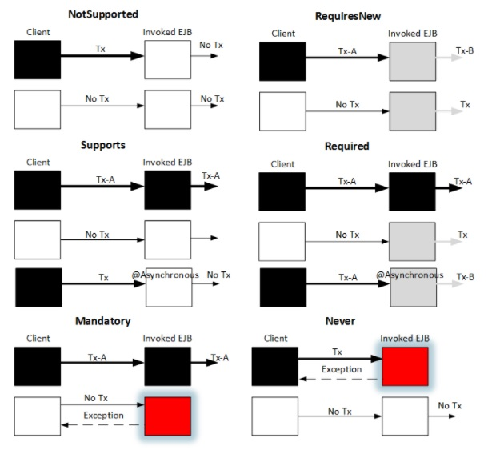

IT Notebook
The important thing is not to stop questioning.
The important thing is not to stop questioning.
Descrizione di dettaglio degli strumenti Java per eseguire task paralleli: Articolo DZone
Appunti di backup: appunti di backup in pdf
Link a Git con gli esempi: Link 1 - Link 2
Infografica che riassume le possibili configurazioni Transazionali negli EJB, tramite Java Transaction API:

Per lavorare su collezioni di dati effettuando operazioni di calcolo, riduzione e aggregazione ci può risultare
utile l'utilizzo degli Stream e dei Parallel Stream.
L'esecuzione di uno Stream avviene in un unico thread, gestendo in modo sequenziale le operazioni.
L'esecuzione di un Parallel Stream avviene invece utlizzando molteplici thread, senza mantenere l'ordinamento degli elementi elaborati.
Esempio di Stream:
numbers.stream()
.map(e -> transform(e))
.forEach(System.out::println);
Esempio di Parallel Stream
numbers.parallelStream()
.map(e -> transform(e))
.forEach(System.out::println);
or
numbers.stream()
.parallel()
.map(e -> transform(e))
.forEach(System.out::println);
Attenzione: l'utilizzo del metodo "sequential()" forzando l'esecuzione del Parallel Stream in modo sequenziale non permette di eseguire elaborazione parallela.
numbers.stream()
.parallel()
.map(e -> transform(e))
.forEachOrdered(System.out::println);
La configurazione del numero di thread da poter assegnare al parallelStraem è importante sia per gestire l'applicazione in modo sicuro rispetto al numero di cores e sia per configurarla al meglio in base alla tipologia di lavoro che lo stream dovrà svolgere.
# of cores
# thread <= ----------------------------------
1 - blocking factor
0 <= blocking factor <= 1
dove:
ForkJoinPool pool = new ForkJoinPool(50);
pool.submit(() ->
numbers.stream().parallel()
.map(e -> transform(e))
.forEach(e -> {})
);
pool.shutdown();
pool.awaitTermination(10, TimeUnit.SECONDS);
Quando conviene lo stream parallelo?